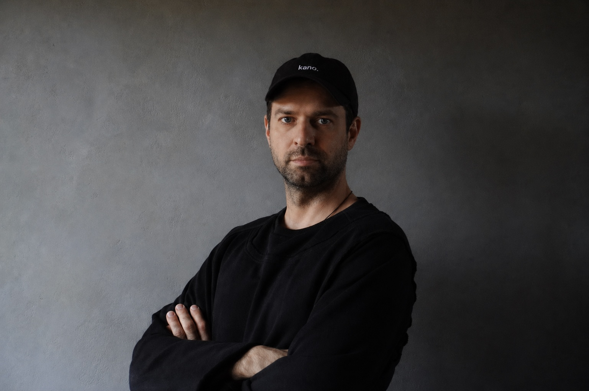

Итак, всегда трепетно писать открывающий пост, закладывающий начало чему-то новому и интересному. Всегда хочется подобрать правильные слова, чтобы выразить то невыразимое, что я чувствую по отношению к своему детищу. Но так как в простоте заложен самый глубокий смысл - я начну с простого.

Kano Studio образовалась как результат моего личного потока идей, болей, экспериментов, разработок, исследований и жажды создавать. Я видел и продолжаю видеть как меняется моя индустрия, как развиваются технологии и как рушатся и создаются системы вокруг меня. Я продолжаю наблюдать за тем, какие ценности вкладывают в себя компании и отдельные представители индустрии, совершая стратегические выборы и разрабатывая свои продукты. И в этом наблюдении у меня постепенно складывалось своё понимание того, какими должны быть технологии, и в частности AI - где их действительное место, и ради чего мы - технологи - вообще всё это делаем.
Epher AI - это внутренняя философия kano. Делать большее меньшим. Искать те зоны, где технология действительно нужна человеку и может встать на своё законное место. Не ради той бешеной пляски, что происходит сейчас в мире вокруг данных технологий, а ради реального высвобождения: времени, внимания, энергии. Чтобы человек мог больше быть собой и меньше тратить себя на то, что машина может сделать лучше. И более того - расширить свои границы и возможности, открыть новое поле для экспериментов в симбиозе с искусственным интеллектом.
Sustainability - я использую это слово именно в английском эквиваленте, потому что слышу в нём то, что стараюсь нести сам своей деятельностью - устойчивость в жизни, в работе, в развитии нас как общества, в том как мы строим будущее и самое главное - наше настоящее. И я считаю, что настоящий подвиг совершится тогда, когда наше общество достигнет максимально возможного статуса устойчивости и процветания, несмотря на среду текущей повышенной нестабильности.
Здесь я буду писать о том, что мы создаём и почему именно так. О решениях, об экспериментах, о вещах которые не сработали и о вещах которые удивили. Обо всём том, что так или иначе имеет отношение к направлению моей технологической деятельности и всей работе студии в первую очередь.